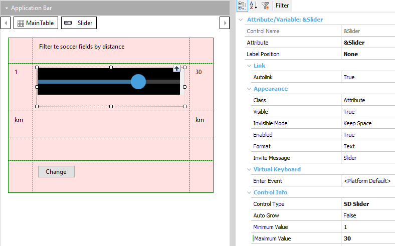
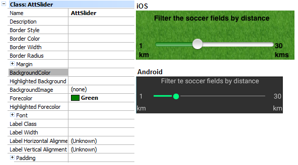
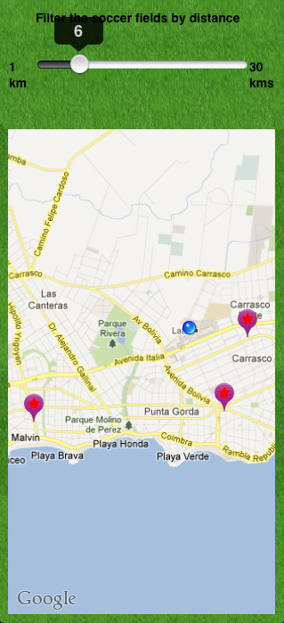
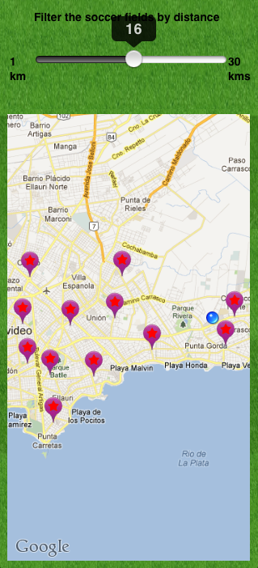

A slider is a graphic interface element that allows users to manually slide an indicator in order to select one of the values included in a from-to range, affecting the rest of the elements on the screen. The control will show changes in the elements displayed on the screen only when the user releases it, meaning that intermediate values will not be shown (increases, decreases, etc.). This control can only be applied to Attribute/Variable of numeric type.  Properties
The Min value must be lower than the Max value; otherwise, default values will be used for these three properties (that is to say, Min = 1, Max = 5, Step = 0). The valid values for any of these properties are numeric constants, which must be of the same type as the variable to which the control is applied. For example, if the variable is of N(4.0) type, the value “1” can be entered but not “1.5”. This value is valid if the variable is of N(4.1) type. ThemesThe Theme for Smart Devices object applied to this control is of Attribute class, just like any other control over attributes and variables. Of the properties in this class, only the following ones will be taken into account:
 Just like any other control, BackgroundColor will also be considered as control background. Note for Android: The ForeColor value is available from version GeneXus X Evolution 2 Upgrade 3. Events
For example, if the variable associated with the control is &slider, the following event is valid:
Event &slider.ValueChanged
// event code...
EndEvent
Warning: As of GeneXus 16 upgrade 3 the ValueChanged event is no longer available. Use ControlValueChanged event instead.
Example  |